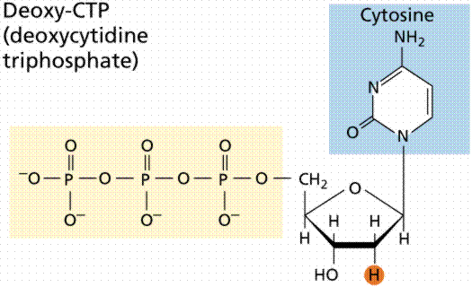
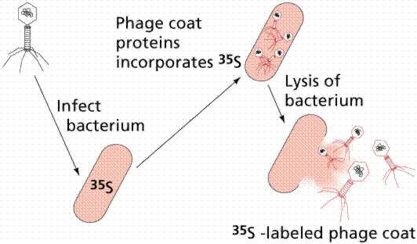
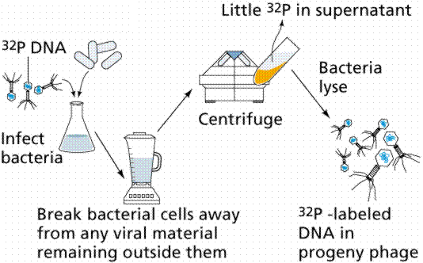
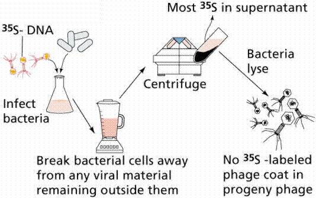
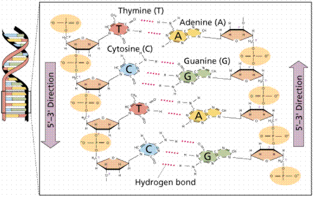
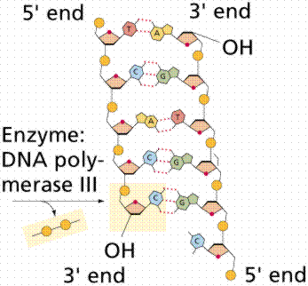

The physical carrier of inheritance | The structure of DNA | DNA Replication
While the period from the early 1900s to World War II has been considered the "golden age" of genetics, scientists still had not determined that DNA, and not protein, was the hereditary material. However, during this time a great many genetic discoveries were made and the link between genetics and evolution was made.
Friedrich Meischer in 1869 isolated DNA from fish sperm and the pus of open wounds. Since it came from nuclei, Meischer named this new chemical, nuclein. Subsequently the name was changed to nucleic acid and lastly to deoxyribonucleic acid (DNA). Robert Feulgen, in 1914, discovered that fuchsin dye stained DNA. DNA was then found in the nucleus of all eukaryotic cells.
During the 1920s, biochemist P.A. Levene analyzed the components of the DNA molecule. He found it contained four nitrogenous bases: cytosine, thymine, adenine, and guanine; deoxyribose sugar; and a phosphate group. He concluded that the basic unit (nucleotide) was composed of a base attached to a sugar and that the phosphate also attached to the sugar. He (unfortunately) also erroneously concluded that the proportions of bases were equal and that there was a tetranucleotide that was the repeating structure of the molecule. The nucleotide, however, remains as the fundemantal unit (monomer) of the nucleic acid polymer. There are four nucleotides: those with cytosine (C), those with guanine (G), those with adenine (A), and those with thymine (T).

Molecular structure of three nirogenous bases. In this diagram there are three phosphates instead of the single phosphate found in the normal nucleotide. Images from Purves et al., Life: The Science of Biology, 4th Edition, by Sinauer Associates (www.sinauer.com) and WH Freeman (www.whfreeman.com), used with permission.
During the early 1900s, the study of genetics began in earnest: the link between Mendel's work and that of cell biologists resulted in the chromosomal theory of inheritance; Garrod proposed the link between genes and "inborn errors of metabolism"; and the question was formed: what is a gene? The answer came from the study of a deadly infectious disease: pneumonia. During the 1920s Frederick Griffith studied the difference between a disease-causing strain of the pneumonia causing bacteria (Streptococcus peumoniae) and a strain that did not cause pneumonia. The pneumonia-causing strain (the S strain) was surrounded by a capsule. The other strain (the R strain) did not have a capsule and also did not cause pneumonia. Frederick Griffith (1928) was able to induce a nonpathogenic strain of the bacterium Streptococcus pneumoniae to become pathogenic. Griffith referred to a transforming factor that caused the non-pathogenic bacteria to become pathogenic. Griffith injected the different strains of bacteria into mice. The S strain killed the mice; the R strain did not. He further noted that if heat killed S strain was injected into a mouse, it did not cause pneumonia. When he combined heat-killed S with Live R and injected the mixture into a mouse (remember neither alone will kill the mouse) that the mouse developed pneumonia and died. Bacteria recovered from the mouse had a capsule and killed other mice when injected into them!
Hypotheses:
1. The dead S strain had been reanimated/resurrected.
2. The Live R had been transformed into Live S by some "transforming factor".
Further experiments led Griffith to conclude that number 2 was correct.
In 1944, Oswald Avery, Colin MacLeod, and Maclyn McCarty revisited Griffith's experiment and concluded the transforming factor was DNA. Their evidence was strong but not totally conclusive. The then-current favorite for the hereditary material was protein; DNA was not considered by many scientists to be a strong candidate.
The breakthrough in the quest to determine the hereditary material came from the work of Max Delbruck and Salvador Luria in the 1940s. Bacteriophage are a type of virus that attacks bacteria, the viruses that Delbruck and Luria worked with were those attacking Escherichia coli, a bacterium found in human intestines. Bacteriophages consist of protein coats covering DNA. Bacteriophages infect a cell by injecting DNA into the host cell. This viral DNA then "disappears" while taking over the bacterial machinery and beginning to make new virus instead of new bacteria. After 25 minutes the host cell bursts, releasing hundreds of new bacteriophage. Phages have DNA and protein, making them ideal to resolve the nature of the hereditary material.
Structure of a bacteriophage virus. Image from Purves et al., Life: The Science of Biology, 4th Edition, by Sinauer Associates (www.sinauer.com) and WH Freeman (www.whfreeman.com), used with permission.
In 1952, Alfred D. Hershey and Martha Chase (click the link to view details of their experiment) conducted a series of experiments to determine whether protein or DNA was the hereditary material. By labeling the DNA and protein with different (and mutually exclusive) radioisotopes, they would be able to determine which chemical (DNA or protein) was getting into the bacteria. Such material must be the hereditary material (Griffith's transforming agent). Since DNA contains Phosphorous (P) but no Sulfur (S), they tagged the DNA with radioactive Phosphorous-32. Conversely, protein lacks P but does have S, thus it could be tagged with radioactive Sulfur-35. Hershey and Chase found that the radioactive S remained outside the cell while the radioactive P was found inside the cell, indicating that DNA was the physical carrier of heredity.



Diagrams illlustrating the Hershey and Chase experiment that supported DNA as the hereditary material while it also showed protein was NOT the hereditary material. Images from Purves et al., Life: The Science of Biology, 4th Edition, by Sinauer Associates (www.sinauer.com) and WH Freeman (www.whfreeman.com), used with permission.
Erwin Chargaff analyzed the nitrogenous bases in many different forms of life, concluding that the amount of purines does not always equal the amount of pyrimidines (as proposed by Levene). DNA had been proven as the genetic material by the Hershey-Chase experiments, but how DNA served as genes was not yet certain. DNA must carry information from parent cell to daughter cell. It must contain information for replicating itself. It must be chemically stable, relatively unchanging. However, it must be capable of mutational change. Without mutations there would be no process of evolution.
Many scientists were interested in deciphering the structure of DNA, among them were Francis Crick, James Watson, Rosalind Franklin, and Maurice Wilkens. Watson and Crick gathered all available data in an attempt to develop a model of DNA structure. Franklin took X-ray diffraction photomicrographs of crystalline DNA extract, the key to the puzzle. The data known at the time was that DNA was a long molecule, proteins were helically coiled (as determined by the work of Linus Pauling), Chargaff's base data, and the x-ray diffraction data of Franklin and Wilkens.
Ball and stick model of DNA. Image from Purves et al., Life: The Science of Biology, 4th Edition, by Sinauer Associates (www.sinauer.com) and WH Freeman (www.whfreeman.com), used with permission.
X-ray diffraction photograph of the DNA double helix. Image from the Internet.
James Watson (L) and Francis Crick (R), and the model they built of the structure of DNA. Image from the Internet.
DNA is a double helix, with bases to the center (like rungs on a ladder) and sugar-phosphate units along the sides of the helix (like the sides of a twisted ladder). The strands are complementary (deduced by Watson and Crick from Chargaff's data, A pairs with T and C pairs with G, the pairs held together by hydrogen bonds). Notice that a double-ringed purine is always bonded to a single ring pyrimidine. Purines are Adenine (A) and Guanine (G). We have encountered Adenosine triphosphate (ATP) before, although in that case the sugar was ribose, whereas in DNA it is deoxyribose. Pyrimidines are Cytosine (C) and Thymine (T). The bases are complementary, with A on one side of the molecule you only get T on the other side, similarly with G and C. If we know the base sequence of one strand we know its complement.
Rendering of two complementary bases on a DNA molecule. Image prepared using MacMolecule.

The ribbon model of DNA. Image from Purves et al., Life: The Science of Biology, 4th Edition, by Sinauer Associates (www.sinauer.com) and WH Freeman (www.whfreeman.com), used with permission.
DNA was proven as the hereditary material and Watson et al. had deciphered its structure. What remained was to determine how DNA copied its information and how that was expressed in the phenotype. Matthew Meselson and Franklin W. Stahl designed an experiment to determine the method of DNA replication. Three models of replication were considered likely.
1. Conservative replication would somehow produce an entirely new DNA strand during replication.
Conservative model of DNA replication. Image from Purves et al., Life: The Science of Biology, 4th Edition, by Sinauer Associates (www.sinauer.com) and WH Freeman (www.whfreeman.com), used with permission.
2. Semiconservative replication would produce two DNA molecules, each of which was composed of one-half of the parental DNA along with an entirely new complementary strand. In other words the new DNA would consist of one new and one old strand of DNA. The existing strands would serve as complementary templates for the new strand.
The semiconservative model of DNA structure. Image from Purves et al., Life: The Science of Biology, 4th Edition, by Sinauer Associates (www.sinauer.com) and WH Freeman (www.whfreeman.com), used with permission.
3. Dispersive replication involved the breaking of the parental strands during replication, and somehow, a reassembly of molecules that were a mix of old and new fragments on each strand of DNA.
The dispersive replication model of DNA replication. Image from Purves et al., Life: The Science of Biology, 4th Edition, by Sinauer Associates (www.sinauer.com) and WH Freeman (www.whfreeman.com), used with permission.
The Meselson-Stahl experiment involved the growth of E. coli bacteria on a growth medium containing heavy nitrogen (Nitrogen-15 as opposed to the more common, but lighter molecular weight isotope, Nitrogen-14). The first generation of bacteria was grown on a medium where the sole source of N was Nitrogen-15. The bacteria were then transferred to a medium with light (Nitrogen-14) medium. Watson and Crick had predicted that DNA replication was semi-conservative. If it was, then the DNA produced by bacteria grown on light medium would be intermediate between heavy and light. It was.
DNA replication involves a great many building blocks, enzymes and a great deal of ATP energy (remember that after the S phase of the cell cycle cells have a G phase to regenerate energy for cell division). Only occurring in a cell once per (cell) generation, DNA replication in humans occurs at a rate of 50 nucleotides per second, 500/second in prokaryotes. Nucleotides have to be assembled and available in the nucleus, along with energy to make bonds between nucleotides. DNA polymerases unzip the helix by breaking the H-bonds between bases. Once the polymerases have opened the molecule, an area known as the replication bubble forms (always initiated at a certain set of nucleotides, the origin of replication). New nucleotides are placed in the fork and link to the corresponding parental nucleotide already there (A with T, C with G). Prokaryotes open a single replication bubble, while eukaryotes have multiple bubbles. The entire length of the DNA molecule is replicated as the bubbles meet.

The roles of DNA polymerases in DNA replication. Image from Purves et al., Life: The Science of Biology, 4th Edition, by Sinauer Associates (www.sinauer.com) and WH Freeman (www.whfreeman.com), used with permission.
Since the DNA strands are antiparallel, and replication proceeds in thje 5' to 3' direction on EACH strand, one strand will form a continuous copy, while the other will form a series of short Okazaki fragments.


Growth of replication forlks as DNA is replicated base by base. Images from Purves et al., Life: The Science of Biology, 4th Edition, by Sinauer Associates (www.sinauer.com) and WH Freeman (www.whfreeman.com), used with permission.
Back to Table of Contents | Go To PROTEIN SYNTHESIS
Email: mj.farabee@emcmail.maricopa.edu
Last modified:
The URL of this page is: